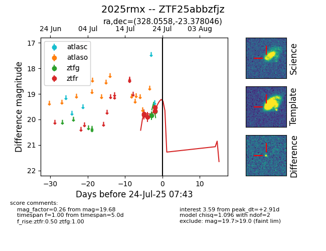

Target ZTF25abbzfjz at 2025-07-24 07:43, see:
FINK: fink-portal.org/ZTF25abbzfjz
Lasair: lasair-ztf.lsst.ac.uk/objects/ZTF25abbzfjz
ALeRCE: alerce.online/object/ZTF25abbzfjz
TNS: wis-tns.org/object/2025rmx
YSE: ziggy.ucolick.org/yse/transient_detail/2025rmx
alt names
ZTF25abbzfjz (ztf,fink)
2025rmx (tns,yse)
coordinates:
equatorial (ra, dec) = (328.0558,-23.37805)
galactic (l, b) = (27.9687,-49.51377)
photometry
last ztfg=19.68, ztfr=19.67
2 ztfg, 5 ztfr detections
